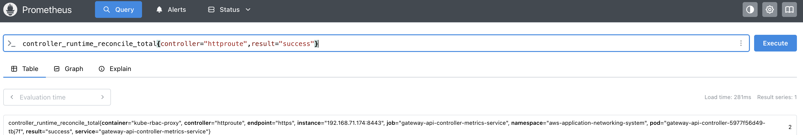

Gateway API Controller Metrics¶
This guide explains how to access and monitor metrics from the AWS Gateway API Controller using Prometheus and Grafana.
Prerequisites¶
- A running Kubernetes cluster with the AWS Gateway API Controller installed
kubectlCLI tool installed and configuredhelmCLI tool installed
Getting Access to Available Metrics¶
The controller makes metrics available via HTTP endpoint in Prometheus metric format. One possible solution for collecting and visualizing these metrics is to set up Prometheus and Grafana using kube-prometheus-stack which is described in the next section.
Step 1: Verify Controller is Running¶
First, verify that the Gateway API Controller is running:
Step 2: Port Forward to Metrics Endpoint¶
Port forward to the controller's metrics endpoint:
kubectl port-forward -n aws-application-networking-system \
deployment/gateway-api-controller 8080:8080
Step 3: Access Metrics¶
Access the metrics endpoint:
This will display all available metrics exposed by the controller.
Setting Up Prometheus and Grafana¶
For a complete monitoring solution, you can set up Prometheus and Grafana to collect and visualize metrics.
Step 1: Add Helm Repository¶
Add the Prometheus community Helm repository:
helm repo add prometheus-community https://prometheus-community.github.io/helm-charts
helm repo update
Step 2: Create Prometheus Values File¶
Create a prometheus-values.yaml file with the following sample configuration:
prometheus:
prometheusSpec:
serviceMonitorNamespaceSelector: {}
podMonitorNamespaceSelector: {}
serviceMonitorSelectorNilUsesHelmValues: false
retention: 7d
grafana:
adminPassword: admin
Step 3: Install Prometheus with Custom Values¶
Install the Prometheus stack with your custom values:
helm install prometheus prometheus-community/kube-prometheus-stack \
--namespace monitoring \
--create-namespace \
--values prometheus-values.yaml
Step 4: Verify All Pods are Running¶
Verify that all monitoring pods are running:
Step 5: Deploy ServiceMonitor¶
Deploy the ServiceMonitor to configure Prometheus to scrape metrics from the controller:
Step 6: Verify ServiceMonitor Deployment¶
Verify that the ServiceMonitor has been created:
Step 7: Access Prometheus¶
Port forward to the Prometheus service:
Open http://localhost:9090/service-discovery in your browser and verify that the service monitor is discovered.

Step 8: Test Queries in Prometheus¶
Open http://localhost:9090/query in your browser to execute queries.
Example query:
Total number of successful HTTPRoute reconciliations:

Step 9: Access Grafana¶
Port forward to the Grafana service:
Open http://localhost:3000/login in your browser and enter admin/admin as credentials.
Step 10: Create Dashboards in Grafana¶
You can create custom dashboards in Grafana using the exposed metrics:
- Go to Dashboards
- Click New dashboard → Add visualization
- Select Prometheus as the data source
- Write your query
Example queries for Grafana dashboards:
Total number of successful HTTPRoute reconciliations:
P99 latency for HTTPRoute reconciliations:

Available Metrics Reference¶
The controller exposes a comprehensive set of metrics that can be used for monitoring and alerting. Below is a reference of commonly used metrics organized by category.
AWS SDK Metrics¶
These metrics track interactions with AWS services:
- aws_api_call_duration_seconds (histogram): Perceived latency from when your code makes an SDK call, includes retries
- aws_api_call_retries (histogram): Number of times the SDK retried requests to AWS services for SDK API calls
- aws_api_calls_total (counter): Total number of SDK API calls from the customer's code to AWS services
- aws_api_request_duration_seconds (histogram): Latency of an individual HTTP request to the service endpoint
- aws_api_requests_total (counter): Total number of HTTP requests that the SDK made
Controller Runtime Metrics¶
These metrics track the controller's reconciliation behavior:
- controller_runtime_active_workers (gauge): Number of currently used workers per controller
- controller_runtime_max_concurrent_reconciles (gauge): Maximum number of concurrent reconciles per controller
- controller_runtime_reconcile_errors_total (counter): Total number of reconciliation errors per controller
- controller_runtime_reconcile_panics_total (counter): Total number of reconciliation panics per controller
- controller_runtime_reconcile_time_seconds (histogram): Length of time per reconciliation per controller
- controller_runtime_reconcile_total (counter): Total number of reconciliations per controller
- controller_runtime_terminal_reconcile_errors_total (counter): Total number of terminal reconciliation errors per controller
- controller_runtime_webhook_panics_total (counter): Total number of webhook panics
Workqueue Metrics¶
These metrics track the internal workqueue behavior:
- workqueue_adds_total (counter): Total number of adds handled by workqueue
- workqueue_depth (gauge): Current depth of workqueue
- workqueue_longest_running_processor_seconds (gauge): How many seconds has the longest running processor for workqueue been running
- workqueue_queue_duration_seconds (histogram): How long in seconds an item stays in workqueue before being requested
- workqueue_retries_total (counter): Total number of retries handled by workqueue
- workqueue_unfinished_work_seconds (gauge): How many seconds of work has been done that is in progress and hasn't been observed by work_duration
- workqueue_work_duration_seconds (histogram): How long in seconds processing an item from workqueue takes